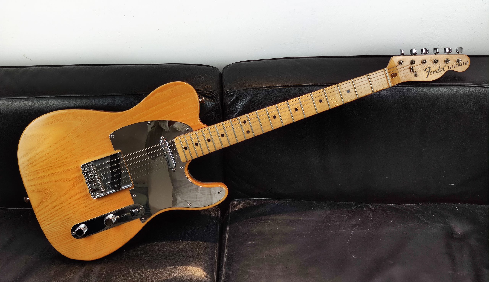
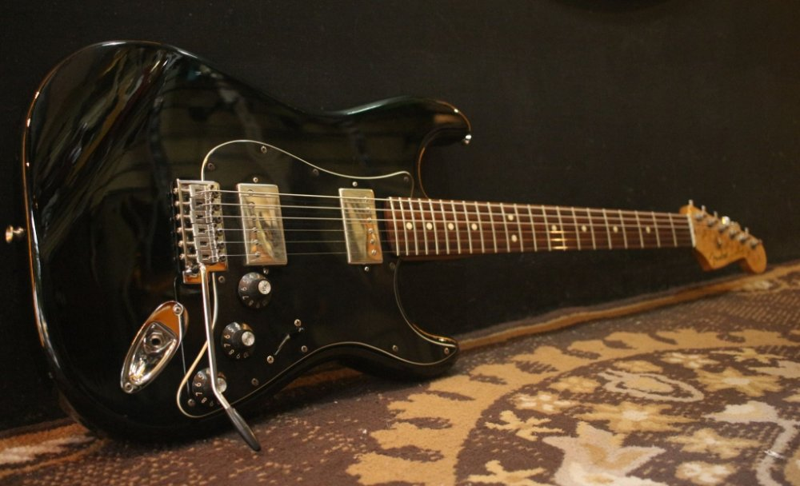
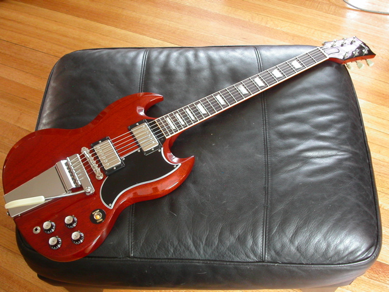
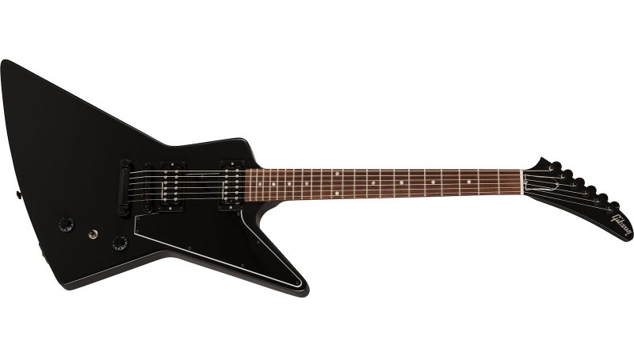

Entre todos os tipos de guitarra, a Telecaster tem um lugar especial. Apesar de não ser o mais famoso,
esse é o modelo que pode ser considerado a origem das guitarras de corpo sólido. Desenvolvido originalmente
pela Fender, no início dos anos 1950, o instrumento foi inicialmente chamado de Broadcaster.
Caracteristicamente, a Telecaster tem o corpo feito em madeira Alder. Também é comum que esse instrumento
tenha braço e escala construído com uma única peça de madeira Maple. Outra característica é que o braço da
guitarra é parafusado no corpo.
Em relação aos captadores, a Telecaster apresenta basicamente dois single coils. Para completar, a guitarra
conta com uma chave de três posições (braço, braço + ponte, ponto) e dois knobs, sendo um de tonalidade e
outro de volume.
O timbre gerado por essa combinação de características é bastante singular e conquistou inicialmente os
corações de artistas da música country americana. No entanto, outros estilos também têm uma relação íntima
com a Telecaster, a exemplo do blues, rock e do jazz.
- Captadores
- Single coil
- Madeira(s) Característica(s)
- Alder e Maple
- Estilos mais característicos
- Country, blues, rock e jazz

Esse é um dos tipos de guitarra mais conhecidos de todos os tempos. Também fabricada em série a partir do início
dos anos 1950, o modelo Les Paul é o carro chefe da Gibson.
Uma das características mais marcantes desse instrumento é o corpo feito em madeira Mogno. Uma curiosidade é que
hoje em dia a produção desse modelo de guitarra nos Estados Unidos está sendo feita Maple. Isso por causa das leis
ambientais no país.
O braço da Les Paul é colado no corpo, o que difere bastante dos tipos de guitarra da Fender. Essa característica
influencia diretamente no timbre e no som que o guitarrista consegue tirar do instrumento.
A guitarra vem normalmente com dois captadores humbuckers, o que deixa o som “gordo”, ideal para quem gosta de
tocar rock’n’roll carregado de distorção. Algumas Les Pauls vem com três captadores humbuckers ao invés de dois.
- Captadores
- Humbucker
- Madeira(s) Característica(s)
- Mogno e Maple
- Estilos mais característicos
- Rock

Quando falamos em tipos de guitarra, esse é provavelmente o mais famoso. Talvez essa frase seja um pouco exagerada,
afinal, não dá para saber com certeza qual o instrumento mais popular do planeta, mas com certeza a Stratocaster é uma
das primeiras opções de muitos guitarristas.
Esse modelo foi criado pela Fender, em 1954, como uma derivação da Telecaster. Popularizado posteriormente por guitarristas
lendários, como Jimi Hendrix, a versatilidade desse instrumento é o que faz dele um best seller.
Quando se trata de captadores, a Strato, como é normalmente chamada pelos guitarristas brasileiros, tem três single coils.
A guitarra vem com uma chave seletora que permite ao músico escolher entre cinco posições, o que agrega ainda mais
possibilidades de timbres ao instrumento.
Em relação ao tipo de madeira com que é produzida, pode-se dizer que existem muitas variações. Originalmente, as Stratos
americanas são feitas em Ash e Alder, mas no Brasil é comum encontrar modelos produzidos com Marupá, Cedro, Freijó, Basswood,
Swamp Ash e até Mogno.
A versatilidade desse instrumento, faz com que ele seja usado por músicos que tocam diferentes gêneros e estilos. Notadamente,
guitarristas de rock, blues e funk se dão muito bem com a Stratocaster. Alguns guitarristas famosos que usam esse tipo de
guitarra são Eric Clapton, Yngwie Malmsteen e John Frusciante.
- Captadores
- Single coil
- Madeira(s) Característica(s)
- Ash e Alder
- Estilos mais característicos
- Rock, blues, funk

Em meados dos anos 1960, a Gibson começou a notar uma queda nas vendas do modelo Les Paul. Algumas críticas
assolavam o famoso modelo da marca. Entre elas, vale destacar o peso do instrumento e a dificuldade de tocar
usando as casas dos últimos trastes.
Com isso, a empresa lançou a Les Paul SG, que mais tarde passou a se chamar apenas SG. A guitarra foi projetada
para solucionar esses “problemas” que algumas pessoas enxergavam na Les Paul. O nome SG vem das iniciais das palavras
solid guitar (guitarra sólida).
O corpo do instrumento é produzido com madeira Mogno. A guitarra usualmente vem equipada com dois ou três captadores
humbuckers. Além disso, a guitarra também tem controles individuais de timbre e volume para cada captador.
Uma curiosidade sobre a SG é que, apesar da captação idêntica a da Les Paul, o timbre desse instrumento é basante diferente.
O modelo foi consagrado por grandes guitarristas, a exemplo de Tony Iommi
(Black Sabbath) Angus Young (AD/DC).
- Captadores
- Humbucker
- Madeira(s) Característica(s)
- Mogno
- Estilos mais característicos
- Rock

Esse é um dos tipos de guitarra que foram imortalizados por lendas. Apesar de não ser um modelo amplamente usado, ele tem um
lugar especial guardado nos corações de muitos guitarristas de rock’n’roll.
O projeto da Flying V surgiu em 1957 com uma ideia da Gibson: criar instrumentos com design mais futurista. No entanto, a ideia
não deu certo e já em 1959 a guitarra teve a linha de produção interrompida. O instrumento só voltou ao mercado no final da década seguinte.
A Flying V é uma guitarra que vem equipada com captadores humbucker, o que faz dela um modelo perfeito para quem quer tirar um
som pesado. Em relação à madeira com que é construído, o instrumento normalmente usa Korina, que é da mesma família que o Mogno.
- Captadores
- Humbucker
- Madeira(s) Característica(s)
- Korina
- Estilos mais característicos
- Rock

Outra guitarra produzida pela Gibson no intuito de chegar a modelos mais futuristas é a Explorer. Ela foi lançada junto com a
Flying V, no final da década de 1950, mas demorou um pouco mais para sair de linha pela primeira vez.
Em 1963, a produção foi interrompida por causa da pouca popularidade do modelo, mas em 1976 a Gibson voltou a produzir a
guitarra. Isso aconteceu porque outras marcas começaram a produzir esse tipo de instrumento e obter sucesso na comercialização.
Assim como a irmã, a Explorer é feita com madeira Korina e vem equipada com captadores humbucker.
- Captadores
- Humbucker
- Madeira(s) Característica(s)
- Korina
- Estilos mais característicos
- Rock
Bom esses são apenas alguns modelos de guitarras que existem por ai, clique aqui para conhecer outros tipos de guitarras disponiveis no mercado.
Clique agui para se cadastrar
Clique Aqui Para Ir Ao Topo da Pagina